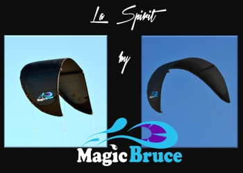
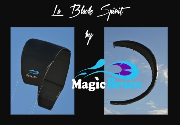

Toutes nos ailes utilisent du spi Tejin de couleur noir (le spi noir offre la meilleure résistance) du Dacron Polyant pour le bord d'attaque et une insertion Insigna entre les deux. Cette dégressivité Dacron Insigna Spi offre une très grande résistance lors d'éventuels crashs. Particulièrement robustes et légères nos ailes volent parfaitement, nombre de lattes réduit (2 pour la spirit, 3 pour la black spirit). Absence de points durs (zip baten ...). No one pump pour un gain de poids et une meilleure répartition de la pression d'air.
Surface de nos ailes (m)
Spirit
2
3
4
6
8
10
12
14
Black Spirit
3
5
7
9
Spirit

La Spirit
La spirit très polyvalente, intuitive, sans temps d'adaptation est idéale pour progresser rapidement et très performante pour un programme free ride crossing ou race.
Prix de la Spirit
Ailes complètes avec barre
Taille (m2)
2
3
4
6
8
10
12
14
Prix (€)
649
689
699
849
899
949
99
1 049
Black Spirit

La Black Spirit
La Black Spirit est un C shape nouvelle génération offrant un réel depower. Une aile rapide véloce qui génère sa puissance par son propre déplacement, réfléchie et conçue pour un programme vague, wake, free style.